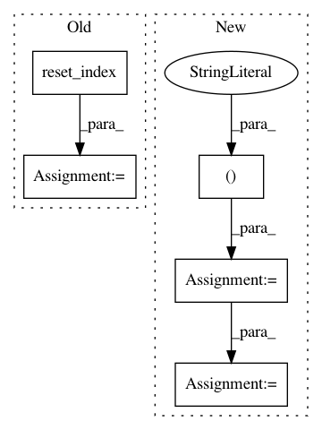

89b43bbd55550d5c103a8b06281d9bc62e533680,QUANTAXIS/QAData/data_resample.py,,QA_data_min_resample,#Any#Any#,348
Before Change
try:
min_data = min_data.reset_index().set_index("datetime", drop=False)
except:
min_data = min_data.set_index("datetime", drop=False)
CONVERSION = {
"code": "first",
"open": "first",
"high": "max",
"low": "min",
"close": "last",
"vol": "sum",
"amount": "sum"
} if "vol" in min_data.columns else {
"code": "first",
"open": "first",
"high": "max",
"low": "min",
"close": "last",
"volume": "sum",
"amount": "sum"
}
resx = pd.DataFrame()
for item in set(min_data.index.date):
min_data_p = min_data.loc[str(item)]
n = min_data_p["{} 21:00:00".format(item):].resample(
type_,
base=30,
closed="right",
loffset=type_
).apply(CONVERSION)
d = min_data_p[:"{} 11:30:00".format(item)].resample(
type_,
base=30,
closed="right",
loffset=type_
).apply(CONVERSION)
f = min_data_p["{} 13:00:00".format(item):].resample(
type_,
closed="right",
loffset=type_
).apply(CONVERSION)
resx = resx.append(d).append(f)
return resx.dropna().reset_index().set_index(["datetime", "code"])
def QA_data_min_resample_stock(min_data, period=5):
After Change
"volume": "sum",
"amount": "sum"
}
min_data = min_data.loc[:, list(CONVERSION.keys())]
idx = min_data.index
part_1 = min_data.iloc[idx.indexer_between_time("9:30", "11:30")]
part_1_res = part_1.resample(
type_,
base=30,
closed="right",
In pattern: SUPERPATTERN
Frequency: 3
Non-data size: 5
Instances
Project Name: QUANTAXIS/QUANTAXIS
Commit Name: 89b43bbd55550d5c103a8b06281d9bc62e533680
Time: 2019-08-05
Author: yutiansut@qq.com
File Name: QUANTAXIS/QAData/data_resample.py
Class Name:
Method Name: QA_data_min_resample
Project Name: bokeh/bokeh
Commit Name: 061d916ba77932d50e41c83f476d8c0d55674856
Time: 2018-10-13
Author: xavart2011@gmail.com
File Name: examples/app/gapminder/main.py
Class Name:
Method Name:
Project Name: WZBSocialScienceCenter/tmtoolkit
Commit Name: 9def69a805132ff7549744b5b30a2fa7531fa405
Time: 2019-06-12
Author: markus.konrad@wzb.eu
File Name: tmtoolkit/preprocess/_tmpreproc.py
Class Name: TMPreproc
Method Name: load_tokens_dataframe